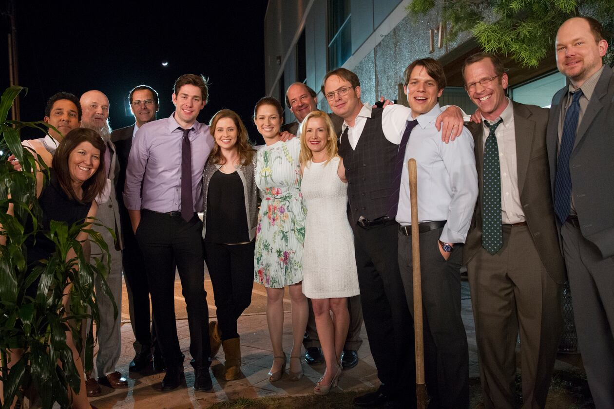

Welcome to The Office fan website!
"The Office" is a beloved American mockumentary-style sitcom that aired from 2005 to 2013, created by Greg Daniels

⇩
Memorable Characters
Michael Scott: The Bumbling Boss
Have you seen this character before? Michael Scott, portrayed by Steve Carell, is one of the most iconic bosses in TV history. He's the lovable, clueless, and often cringe-worthy regional manager of Dunder Mifflin's Scranton branch.
Michael's antics and inappropriate comments will have you laughing and cringing simultaneously.

Viewer Comment
"I can't get enough of 'The Office'! Michael Scott's antics and the quirky characters make it an absolute must-watch. It's the perfect blend of humor and heart."
Chris Rainbow